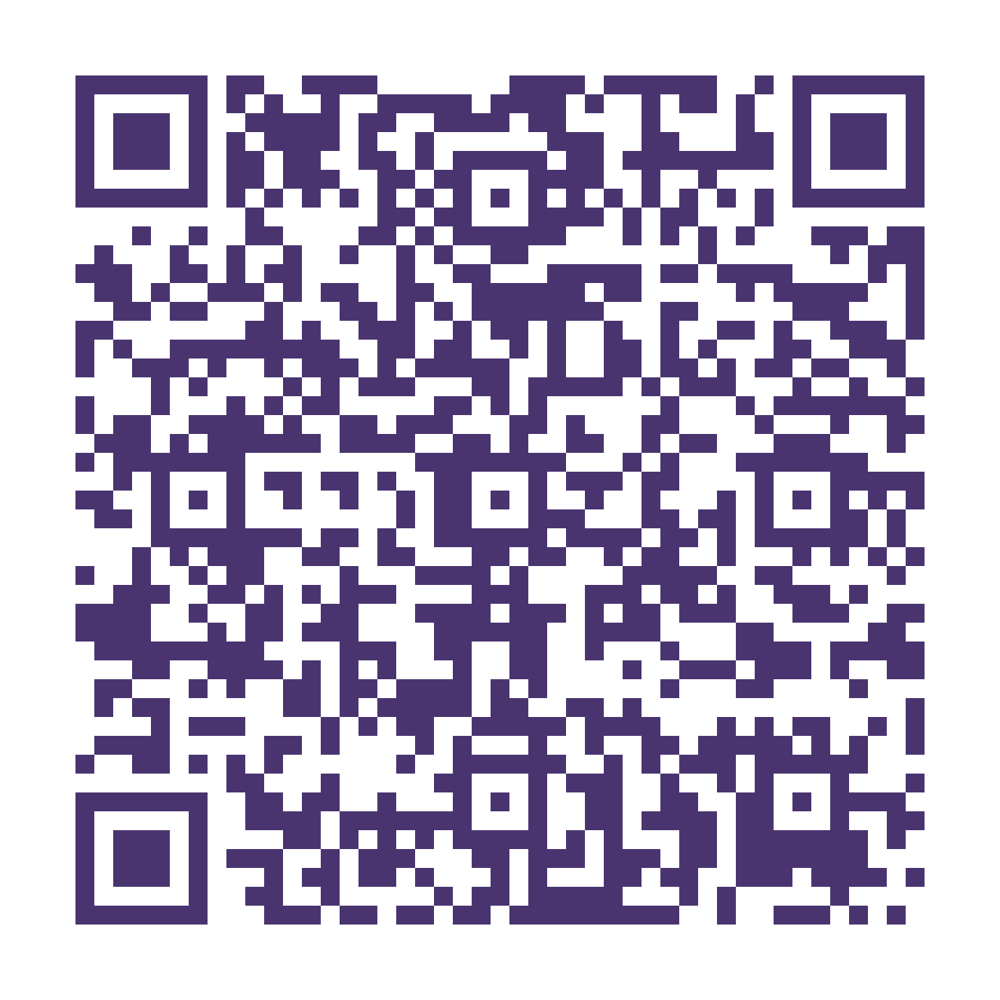

Imersão Mulheres Renovadas para Transformar
Conte pra gentecomo foi para você
- 1 Abra a câmera do seu celular
- 2 Aponte para o código ao lado
- 3 Toque no link que aparecer
Se preferir, digite no navegador: elizandra-tfrm.github.io/imersao-igreja/avaliacao.html

É rápido — menos de 2 minutos